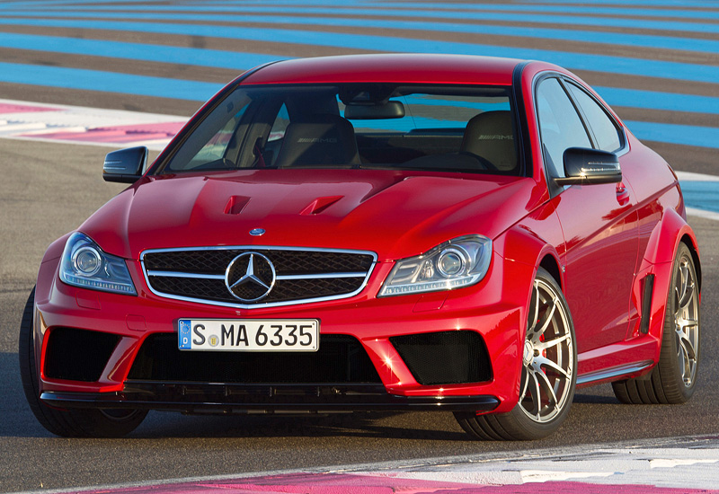
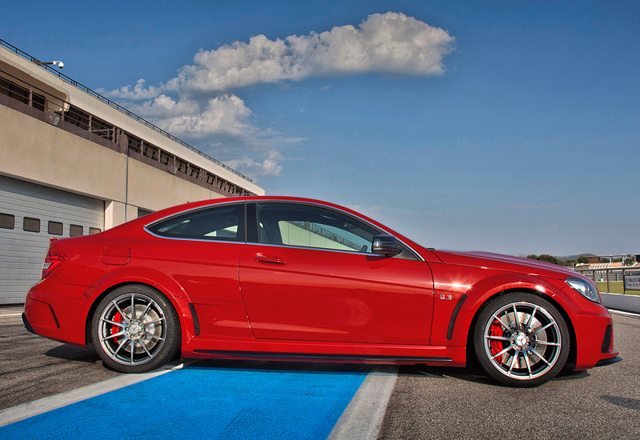
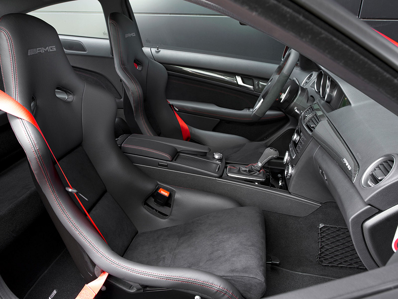
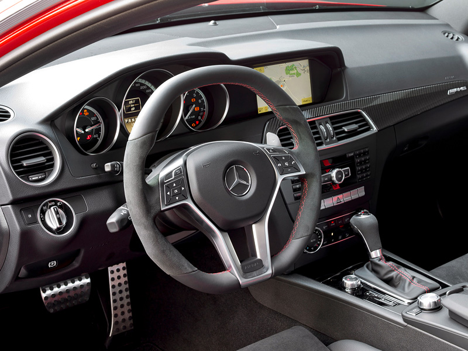
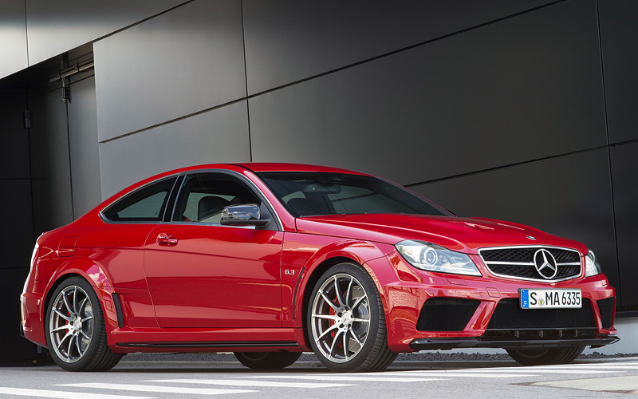
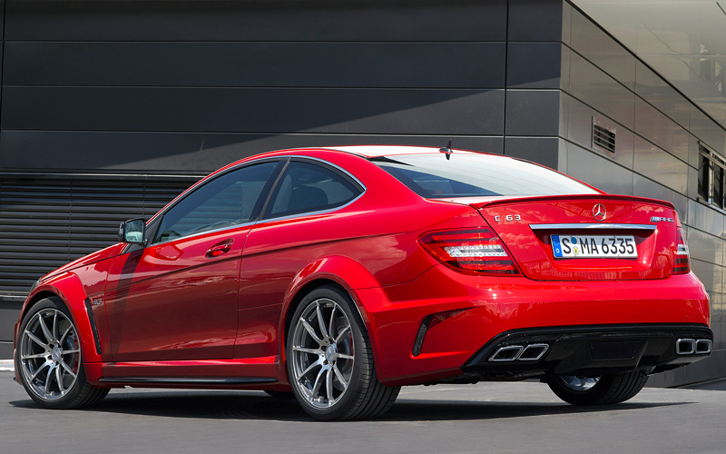

Описание Mercedes-Benz C 63 AMG Coupe Black Series
Ограниченная серия купе, четвёртая по счету работа подразделения Skunkworks AMG, планировалась к выпуску ограниченным тиражом в 650 штук, но после увеличили до 800 единиц.
Black Series оснащается тем же атмосферным 6.2 литровым V8 двигателем серии M156, но с коленвалом, кованными поршнями и шатунами от SLS, а также новым масляным радиатором и перенастроенным ЭБУ двигателя. Вес автомобиля уменьшился всего на 20 кг по сравнению с обычным C63. Мощность силового агрегата составила 517 л.с (при 6800 об/мин) и 620 Н·м крутящего момента при 5000 об/мин. В автомобиль установили автоматическую коробку передач AMG SpeedShift MCT, но вместо гидромуфты в ней используется система двойного сцепления, которая управляется электронным блоком управления. Разгон с 0 до 100 км/ч составляет 4.2 секунды, до 200 км/ч — 13.9 секунд. Максимальная скорость ограниченна электроникой на отметке в 250 км/ч (около 300 км/ч без ограничителя).
Автомобиль получил более расширенные колёсные арки, два отверстия в капоте для отвода тепла и увеличения прижимной силы, более жёсткие регулируемые амортизаторы KW и пружины, задний дифференциал ограниченного скольжения, систему ESP с тремя режимами, новые перфорированные композитные тормоза и ковшеобразные сиденья AMG.
При установке опционального пакета AMG Aerodynamic Package можно получить карбоновые канарды по углам переднего бампера, передний сплиттер, который снижает подъёмную силу, и антикрыло, а в Performance Package полу-слики Dunlop Tires и радиатор масла дифференциала.
Трассу Северная Петля автомобиль преодолел за 7 минут 45 секунд, такое же время показал CLK63 AMG Black, а на тест-треке Top Gear, со временем в 1 минуту 21 секунду, машина оказалась быстрее Ferrari 599 (01:21.2) и Audi R8 (01:21.6).
Фото Mercedes-Benz C 63 AMG Coupe Black Series




